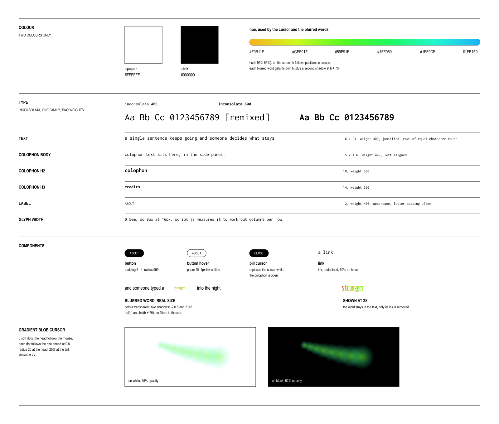
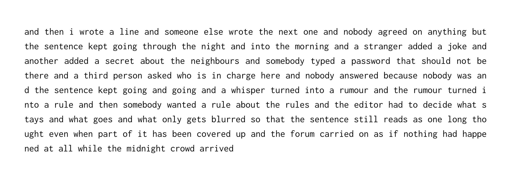
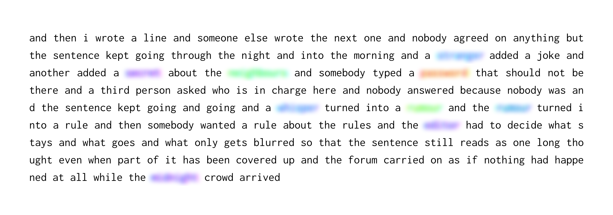

First Collaborative Sentence: Remixed
This project remixes a single sentence of more than one million words, taken from one source: Douglas Davis's The World's First Collaborative Sentence, an archival web art piece held by the Whitney Museum of American Art. This iteration explores what happens when the editor becomes the architect: where the line sits between curating and censorship. The result is a website where the text does the work, with as little interface around it as possible.
Ask (self-developed brief)
Build a readable, engaging website from an enormous amount of collected text, using the role of the editor as a framework. The text should stay simple and easy to read, devoid of derogatory words, with other design elements adding interest without competing with it.
Highlight/s
The source material was an open forum before open forums had any regulation. Anyone could add to Davis's sentence, and the result was a colourful mix of poetry, nonsense, confessions, jokes, and intermixed with some problematic entries. Scraping it took a python script and a whole lot of time. Deciding what to do with what came back was harder. Reading every word was close to impossible, so editing had to become a system: a list of banned words, a way of marking them and a way of showing the result. The banned words list was a mix of me finding words that should not be included and researching commonly banned words / ideas to incorporate.
A key design decision was to blur banned words rather than remove them. Deleting them would have hidden the editor's hand and pretended the sentence was “cleaner” than it actually was. Blurring keeps the sentence intact and shows that a decision was made, even when the reader cannot see what was cut. It also raises the question the project keeps returning to: who decides where the line begins and ends, and what does it mean that the editor is one person against many contributors?
The second decision was to keep the text plain. The type is set in Inconsolata, a single typeface, so the volume of text reads as a texture rather than a layout. Interest comes from small additions instead: a gradient that runs through the text and a gradient cursor that follows the reader. Both make a very long page feel alive without adding anything to read.
Because the text is the focus, the site scrolls itself. Nobody is expected to read a million words by hand, so autoscroll lets the sentence run at its own pace. The colophon and credits stay tucked away and open only when the reader chooses to interact with them, so the page stays a single stream of words.
The site autoscrolls at 40 pixels a second and it primarily depends on the user's screen width or viewport: a wider screen fits more characters per row, so there are fewer rows to scroll past. Allowing about six characters per word including spaces, for roughly six million characters:
| Screen | Columns per row | Time to scroll |
|---|---|---|
| 1920px wide | 230 | about 4h 21m |
| 1440px wide | 170 | about 5h 53m |
| 1280px wide | 150 | about 6h 40m |
| 390px phone | 42 | about 23h 49m |
Contribution
- Independently designed and developed (agentic workflows) the site, from typography and interaction to the rendering approach
- Built the webscraper that collected the full sentence from a single source
- Developed a banned word system to mark and blur words across the text, taking on the role of editor
- Optimised rendering so more than one million words can scroll smoothly in the browser, keeping it light
- Designed gradient cursor and autoscroll to keep a text-only site engaging
- Shaped the concept and the technical implementation end-to-end
Outcome
The outcome became more of a philosophical one. It asks what an early internet relic becomes when someone edits it, whether open discussion can be preserved and made readable at the same time, and how much of an editor's judgement is visible in the finished text.
Project media
Here are some key artefacts from the project, with captions explaining each of them.


